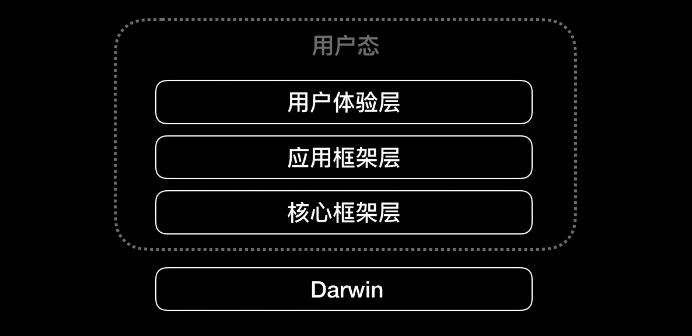
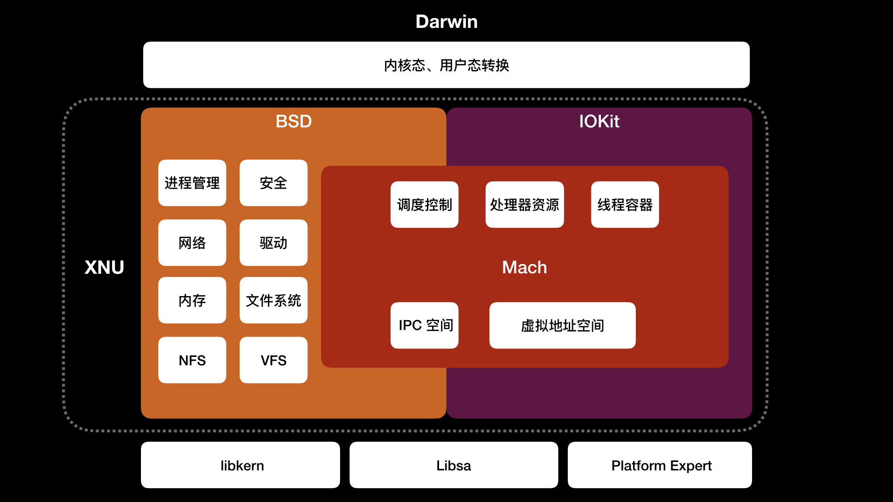

- 00 开篇词 锚定一个点，然后在这个点上深耕.md
- 01 建立你自己的iOS开发知识体系.md
- 02 App 启动速度怎么做优化与监控？.md
- 03 Auto Layout 是怎么进行自动布局的，性能如何？.md
- 04 项目大了人员多了，架构怎么设计更合理？.md
- 05 链接器：符号是怎么绑定到地址上的？.md
- 06 App 如何通过注入动态库的方式实现极速编译调试？.md
- 07 Clang、Infer 和 OCLint ，我们应该使用谁来做静态分析？.md
- 08 如何利用 Clang 为 App 提质？.md
- 09 无侵入的埋点方案如何实现？.md
- 10 包大小：如何从资源和代码层面实现全方位瘦身？.md
- 11 热点问题答疑（一）：基础模块问题答疑.md
- 12 iOS 崩溃千奇百怪，如何全面监控？.md
- 13 如何利用 RunLoop 原理去监控卡顿？.md
- 14 临近 OOM，如何获取详细内存分配信息，分析内存问题？.md
- 15 日志监控：怎样获取 App 中的全量日志？.md
- 16 性能监控：衡量 App 质量的那把尺.md
- 17 远超你想象的多线程的那些坑.md
- 18 怎么减少 App 电量消耗？.md
- 19 热点问题答疑（二）：基础模块问题答疑.md
- 20 iOS开发的最佳学习路径是什么？.md
- 21 除了 Cocoa，iOS还可以用哪些 GUI 框架开发？.md
- 22 细说 iOS 响应式框架变迁，哪些思想可以为我所用？.md
- 23 如何构造酷炫的物理效果和过场动画效果？.md
- 24 A_B 测试：验证决策效果的利器.md
- 25 怎样构建底层的发布和订阅事件总线？.md
- 26 如何提高 JSON 解析的性能？.md
- 27 如何用 Flexbox 思路开发？跟自动布局比，Flexbox 好在哪？.md
- 28 怎么应对各种富文本表现需求？.md
- 29 如何在 iOS 中进行面向测试驱动开发和面向行为驱动开发？.md
- 30 如何制定一套适合自己团队的 iOS 编码规范？.md
- 31 iOS 开发学习资料和书单推荐.md
- 32 热点问题答疑（三）.md
- 33 iOS 系统内核 XNU：App 如何加载？.md
- 34 iOS 黑魔法 Runtime Method Swizzling 背后的原理.md
- 35 libffi：动态调用和定义 C 函数.md
- 36 iOS 是怎么管理内存的？.md
- 37 如何编写 Clang 插件？.md
- 38 热点问题答疑（四）.md
- 39 打通前端与原生的桥梁：JavaScriptCore 能干哪些事情？.md
- 40 React Native、Flutter 等，这些跨端方案怎么选？.md
- 41 原生布局转到前端布局，开发思路有哪些转变？.md
- 42 iOS原生、大前端和Flutter分别是怎么渲染的？.md
- 43 剖析使 App 具有动态化和热更新能力的方案.md
- 用户故事 我是如何学习这个专栏的？.md
- 结束语 慢几步，深几度.md
33 iOS 系统内核 XNU：App 如何加载？
你好，我是戴铭。
在专栏的第2篇文章《App 启动速度怎么做优化与监控？》更新完之后，我看到很多同学对启动加载 App 的底层原理表示出了浓厚兴趣。所谓工欲善其事，必先利其器，相信有着好奇心的你，一定也会对支撑着 App 运行的操作系统有着各种各样的疑问。
我曾在专栏的第5篇文章《链接器：符号是怎么绑定到地址上的？》中，和你分享了链接器在编译时和程序启动时会做的事情。而今天这篇文章，我会重点与你说说加载动态链接器之前，系统是怎么加载 App 的。
所以，今天我会先跟你说说iOS系统的架构是怎样的，各部分的作用是什么，帮助你理解iOS系统的原理，进而更全面地理解它在 App 加载时做了哪些事情？
接下来，我就先跟你聊聊 iOS 的系统架构是怎样的。在理解iOS系统架构之前，你最好掌握一些操作系统原理的基础知识。
iOS 系统架构
iOS 系统是基于 ARM 架构的，大致可以分为四层：
- 最上层是用户体验层，主要是提供用户界面。这一层包含了 SpringBoard、Spotlight、Accessibility。
- 第二层是应用框架层，是开发者会用到的。这一层包含了开发框架 Cocoa Touch。
- 第三层是核心框架层，是系统核心功能的框架层。这一层包含了各种图形和媒体核心框架、Metal 等。
- 第四层是 Darwin层，是操作系统的核心，属于操作系统的内核态。这一层包含了系统内核 XNU、驱动等。

图1 iOS系统架构
其中，用户体验层、应用框架层和核心框架层，属于用户态，是上层 App 的活动空间。Darwin是用户态的下层支撑，是iOS系统的核心。
Darwin的内核是XNU，而XNU是在UNIX的基础上做了很多改进以及创新。了解XNU的内部是怎么样的，将有助于我们解决系统层面的问题。
所以接下来，我们就一起看看XNU的架构，看看它的内部到底都包含了些什么。
XNU
XNU 内部由 Mach、BSD、驱动 API IOKit 组成，这些都依赖于 libkern、libsa、Platform Expert。如下图所示：

图2 XNU系统架构
其中，Mach是作为 UNIX 内核的替代，主要解决 UNIX一切皆文件导致抽象机制不足的问题，为现代操作系统做了进一步的抽象工作。 Mach 负责操作系统最基本的工作，包括进程和线程抽象、处理器调度、进程间通信、消息机制、虚拟内存管理、内存保护等。
进程对应到 Mach 是 Mach Task，Mach Task 可以看做是线程执行环境的抽象，包含虚拟地址空间、IPC 空间、处理器资源、调度控制、线程容器。
进程在 BSD 里是由 BSD Process 处理，BSD Process 扩展了 Mach Task，增加了进程 ID、信号信息等，BSD Process 里面包含了扩展 Mach Thread 结构的 Uthread。
Mach 的模块包括进程和线程都是对象，对象之间不能直接调用，只能通过 Mach Msg 进行通信，也就是 mach_msg() 函数。在用户态的那三层中，也就是在用户体验层、应用框架层和核心框架层中，你可以通过 mach_msg_trap() 函数触发陷阱，从而切至 Mach，由 Mach 里的 mach_msg() 函数完成实际通信，具体实现可以参看 NSHipster 的这篇文章“Inter-Process Communication”。
每个 Mach Thread 表示一个线程，是 Mach 里的最小执行单位。Mach Thread 有自己的状态，包括机器状态、线程栈、调度优先级（有128个，数字越大表示优先级越高）、调度策略、内核 Port、异常 Port。
Mach Thread 既可以由 Mach Task 处理，也可以扩展为 Uthread，通过 BSD Process 处理。这是因为 XNU 采用的是微内核 Mach 和 宏内核 BSD 的混合内核，具备微内核和宏内核的优点。
- 微内核可以提高系统的模块化程度，提供内存保护的消息传递机制；
- 宏内核也可以叫单内核，在出现高负荷状态时依然能够让系统保持高效运作。
Mach 是微内核，可以将操作系统的核心独立在进程上运行，不过，内核层和用户态各层之间切换上下文和进程间消息传递都会降低性能。为了提高性能，苹果深度定制了 BSD 宏内核，使其和 Mach 混合使用。
宏内核 BSD 是对 Mach 封装，提供进程管理、安全、网络、驱动、内存、文件系统（HFS+）、网络文件系统（NFS）、虚拟文件系统（VFS）、POSIX（Portable Operating System Interface of UNIX，可移植操作系统接口）兼容。
早期的 BSD 是 UNIX 衍生出的操作系统，现在 BSD 是类 UNIX 操作系统的统称。XNU 的 BSD 来源于 FreeBSD 内核，经过深度定制而成。IEEE 为了保证软件可以在各个 UNIX 系统上运行而制定了 POSIX 标准，iOS 也是通过 BSD 对 POSIX 的兼容而成为了类 UNIX 系统。
BSD 提供了更现代、更易用的内核接口，以及 POSIX 的兼容，比如通过扩展 Mach Task 进程结构为 BSD Process。对于 Mach 使用 mach_msg_trap() 函数触发陷阱来处理异常消息，BSD 则在异常消息机制的基础上建立了信号处理机制，用户态产生的信号会先被 Mach 转换成异常，BSD 将异常再转换成信号。对于进程和线程，BSD 会构建 UNIX 进程模型，创建 POSIX 兼容的线程模型 pthread。
iOS 6后，为了增强系统安全，BSD 实行了ASLR（Address Space Layout Randomization，地址空间布局随机化）。随着 iPhone 硬件升级，为了更好地利用多核，BSD 加入了工作队列，以支持多核多线程处理，这也是 GCD 能更高效工作的基础。 BSD 还从 TrustdBSD 引入了 MAC 框架以增强权限 entitlement 机制的安全。
除了微内核 Mach 和宏内核 BSD 外，XNU 还有 IOKit。IOKit 是硬件驱动程序的运行环境，包含电源、内存、CPU等信息。IOKit 底层 libkern 使用 C++ 子集 Embedded C++ 编写了驱动程序基类，比如 OSObject、OSArray、OSString等，新驱动可以继承这些基类来写。
了解了 XNU 后，接下来，我再跟你聊聊 XNU 怎么加载 App 的？
XNU 怎么加载 App？
iOS 的可执行文件和动态库都是 Mach-O 格式，所以加载 APP 实际上就是加载 Mach-O 文件。
Mach-O header 信息结构代码如下：
struct mach_header_64 {
uint32_t magic; // 64位还是32位
cpu_type_t cputype; // CPU 类型，比如 arm 或 X86
cpu_subtype_t cpusubtype; // CPU 子类型，比如 armv8
uint32_t filetype; // 文件类型
uint32_t ncmds; // load commands 的数量
uint32_t sizeofcmds; // load commands 大小
uint32_t flags; // 标签
uint32_t reserved; // 保留字段
};
如上面代码所示，包含了表示是64位还是32位的 magic、CPU 类型 cputype、CPU 子类型 cpusubtype、文件类型 filetype、描述文件在虚拟内存中逻辑结构和布局的 load commands 数量和大小等文件信息。
其中，文件类型 filetype 表示了当前 Mach-O 属于哪种类型。Mach-O 包括以下几种类型。
- OBJECT，指的是 .o 文件或者 .a 文件；
- EXECUTE，指的是IPA 拆包后的文件；
- DYLIB，指的是 .dylib 或 .framework 文件；
- DYLINKER，指的是动态链接器；
- DSYM，指的是保存有符号信息用于分析闪退信息的文件。
加载 Mach-O 文件，内核会 fork 进程，并对进程进行一些基本设置，比如为进程分配虚拟内存、为进程创建主线程、代码签名等。用户态 dyld 会对 Mach-O 文件做库加载和符号解析。
苹果公司已经将 XNU 开源，并在 GitHub 上创建了镜像。要想编译 XNU，你可以查看“Building the XNU kernel on Mac OS X Sierra (10.12.X)”这篇文章；要想调试 XNU，可以查看“Source Level Debugging the XNU Kernel”这篇文章。
整个 fork 进程，加载解析 Mach-O文件的过程可以在 XNU 的源代码中查看，代码路径是darwin-xnu/bsd/kern/kern_exec.c，地址是https://github.com/apple/darwin-xnu/blob/master/bsd/kern/kern_exec.c，相关代码在 __mac_execve 函数里，代码如下：
int __mac_execve(proc_t p, struct __mac_execve_args *uap, int32_t *retval)
{
// 字段设置
...
int is_64 = IS_64BIT_PROCESS(p);
struct vfs_context context;
struct uthread *uthread; // 线程
task_t new_task = NULL; // Mach Task
...
context.vc_thread = current_thread();
context.vc_ucred = kauth_cred_proc_ref(p);
// 分配大块内存，不用堆栈是因为 Mach-O 结构很大。
MALLOC(bufp, char *, (sizeof(*imgp) + sizeof(*vap) + sizeof(*origvap)), M_TEMP, M_WAITOK | M_ZERO);
imgp = (struct image_params *) bufp;
// 初始化 imgp 结构里的公共数据
...
uthread = get_bsdthread_info(current_thread());
if (uthread->uu_flag & UT_VFORK) {
imgp->ip_flags |= IMGPF_VFORK_EXEC;
in_vfexec = TRUE;
} else {
// 程序如果是启动态，就需要 fork 新进程
imgp->ip_flags |= IMGPF_EXEC;
// fork 进程
imgp->ip_new_thread = fork_create_child(current_task(),
NULL, p, FALSE, p->p_flag & P_LP64, TRUE);
// 异常处理
...
new_task = get_threadtask(imgp->ip_new_thread);
context.vc_thread = imgp->ip_new_thread;
}
// 加载解析 Mach-O
error = exec_activate_image(imgp);
if (imgp->ip_new_thread != NULL) {
new_task = get_threadtask(imgp->ip_new_thread);
}
if (!error && !in_vfexec) {
p = proc_exec_switch_task(p, current_task(), new_task, imgp->ip_new_thread);
should_release_proc_ref = TRUE;
}
kauth_cred_unref(&context.vc_ucred);
if (!error) {
task_bank_init(get_threadtask(imgp->ip_new_thread));
proc_transend(p, 0);
thread_affinity_exec(current_thread());
// 继承进程处理
if (!in_vfexec) {
proc_inherit_task_role(get_threadtask(imgp->ip_new_thread), current_task());
}
// 设置进程的主线程
thread_t main_thread = imgp->ip_new_thread;
task_set_main_thread_qos(new_task, main_thread);
}
...
}
可以看出，由于 Mach-O 文件很大， __mac_execve 函数会先为 Mach-O 分配一大块内存 imgp，接下来会初始化 imgp 里的公共数据。内存处理完，__mac_execve 函数就会通过 fork_create_child() 函数 fork 出一个新的进程。新进程 fork 后，会通过 exec_activate_image() 函数解析加载 Mach-O 文件到内存 imgp 里。最后，使用 task_set_main_thread_qos() 函数设置新 fork 出进程的主线程。
exec_activate_image() 函数会调用不同格式对应的加载函数，代码如下：
struct execsw {
int (*ex_imgact)(struct image_params *);
const char *ex_name;
} execsw[] = {
{ exec_mach_imgact, "Mach-o Binary" },
{ exec_fat_imgact, "Fat Binary" },
{ exec_shell_imgact, "Interpreter Script" },
{ NULL, NULL}
};
可以看出，加载 Mach-O 文件的是 exec_mach_imgact() 函数。exec_mach_imgact() 会通过 load_machfile() 函数加载 Mach-O 文件，根据解析 Mach-O 后得到的 load command 信息，通过映射方式加载到内存中。还会使用 activate_exec_state() 函数处理解析加载 Mach-O 后的结构信息，设置执行 App 的入口点。
设置完入口点后会通过 load_dylinker() 函数来解析加载 dyld，然后将入口点地址改成 dyld 的入口地址。这一步完后，内核部分就完成了 Mach-O文件的加载。剩下的就是用户态层 dyld 加载 App 了。
Dyld 的入口函数是 __dyld_start，dyld 属于用户态进程，不在 XNU 里，__dyld_start 函数的实现代码在 dyld 仓库中的 dyldStartup.s 文件里。__dyld_start 会加载 App 相关的动态库，处理完成后会返回 App 的入口地址，然后到 App 的 main 函数。
小结
今天我跟你介绍了 iOS 系统的内核 XNU，以及 XNU 是如何加载 App 的。总体来说，XNU 加载就是为 Mach-O 创建一个新进程，建立虚拟内存空间，解析Mach-O文件，最后映射到内存空间。流程可以概括为：
fork 新进程；
为 Mach-O 分配内存；
解析 Mach-O；
读取 Mach-O 头信息；
遍历 load command 信息，将 Mach-O 映射到内存；
启动 dyld。
课后作业
在今天这篇文章中，我主要和你分享的是系统内核加载 App的流程，而关于用户态 dyld 加载过程没有展开说。如果你想了解 dyld 加载过程的话，可以看看 Mike Ash 的“dyld: Dynamic Linking On OS X”这篇文章。
相应地，今天的课后思考题，我希望你能够和我分享一下这篇文章的读后感。
感谢你的收听，欢迎你在评论区给我留言分享你的观点，也欢迎把它分享给更多的朋友一起阅读。
© 2019 - 2023 Liangliang Lee. Powered by gin and hexo-theme-book.